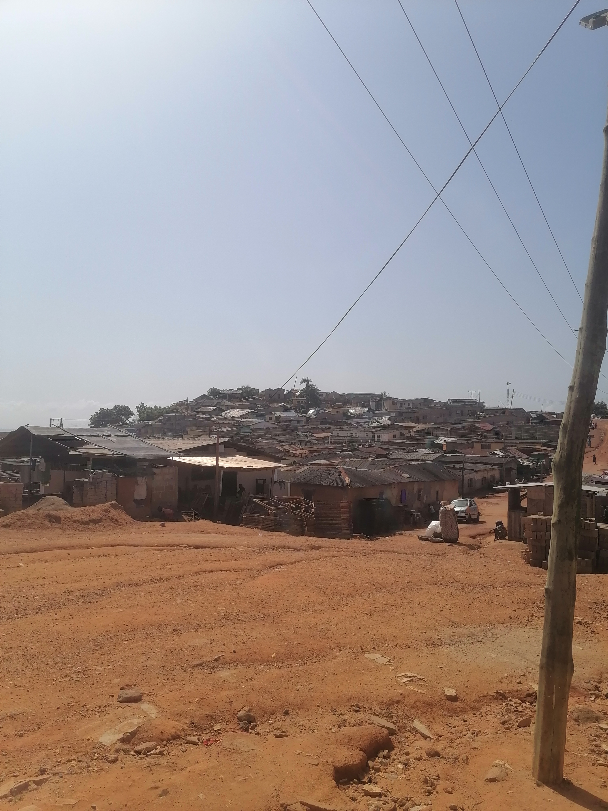

My Country is in Economic Crisis
Ghana is facing a huge problem of economic crises. The leaders in the country only think about themselves but not the people of the country. Instead of providing good layout systems and good roads for some villages like Abuesi, they would rather use our money to buy luxurious things. Below is the image showing the state of a town called Abuesi..
Joseph Yalley BYU-Idaho WDD130 Course Homepage
Personal Introduction:
Name: Joseph Yalley
Location: Takoradi, Ghana, Western Region of Ghana
Summary: Enthusiastic and dedicated web development student passionate about creating impactful and user-friendly web experiences. Proficient in front-end technologies, eager to learn and adapt to new technologies and methodologies in the ever-evolving field of web development.